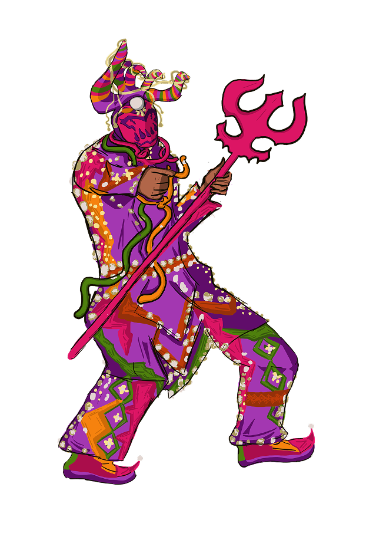
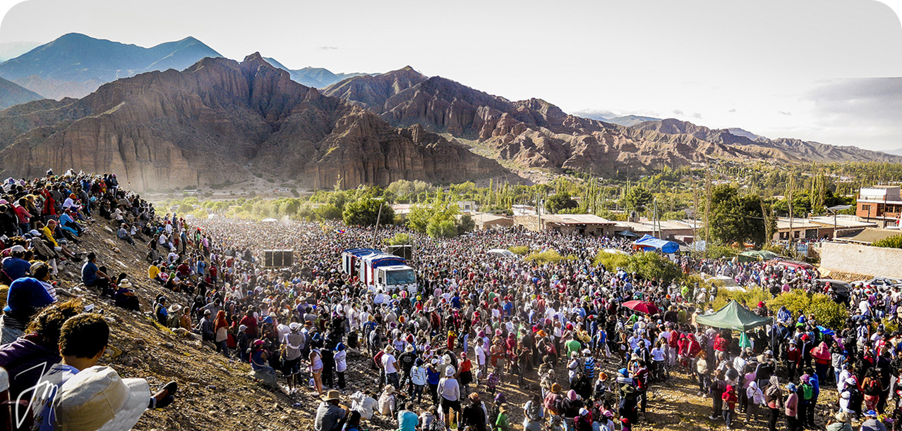
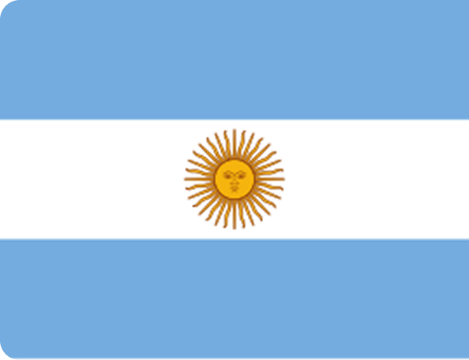
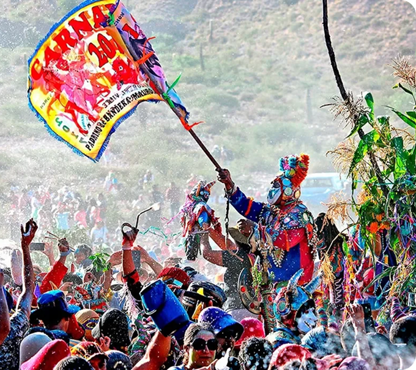

ARGENTINA
Carnaval de Tilcara
Pujllay

O Pujllay (também escrito como Pucllay, Puljay ou identificado popularmente como “o diablo do carnaval”) é o personagem central do Carnaval de Tilcara e das celebrações da Quebrada de Humahuaca, na província de Jujuy, Argentina. Embora muitas vezes seja associado à imagem de um diabo, sua origem está ligada à cosmovisão andina e aos ciclos de fertilidade, abundância e renovação da vida.
Na tradição da Quebrada de Humahuaca, o personagem representa uma força espiritual ligada à fertilidade da terra, à Pachamama e às primeiras colheitas do calendário agrícola. O carnaval é entendido como um período de abundância, reciprocidade e agradecimento pelos frutos recebidos durante o ano.
Com a chegada dos colonizadores espanhóis e do cristianismo, essa entidade indígena passou a ser associada ao conceito europeu de “diabo”. Entretanto, para os povos andinos, o Pujllay não representa o mal nem o demônio cristão. Ele simboliza a alegria, a brincadeira, a fertilidade e a liberação temporária das regras sociais cotidianas.
O ciclo do carnaval gira em torno dele. No ritual do Desentierro del Carnaval, o Pujllay é retirado do mojón (montículo cerimonial de pedras considerado a boca da Pachamama), marcando o início das festividades. Ao final da celebração ocorre o Enterro del Pujllay, quando ele retorna simbolicamente à terra até o carnaval seguinte
A vestimenta do Pujllay é um dos elementos mais marcantes do Carnaval de Tilcara e varia entre as diferentes comparsas e localidades da Quebrada de Humahuaca. O personagem utiliza máscaras que ocultam completamente a identidade do participante. As máscaras costumam apresentar: traços demoníacos estilizados; olhos grandes; expressões exageradas; cores intensas; elementos brilhantes.

É uma festa onde combina a tradição carnavalesca introduzida pelos espanhóis e os rituais culturais dos povos originários da região, especialmente os rituais vinculados à terra (Pachamama). A celebração começa no sábado anterior ao fim de semana de Carnaval, quando um coletivo realiza o ritual simbólico de desenterrar o “diabo”, figura que havia sido enterrada ao final da festa do ano anterior. Após esse momento, os grupos descem para as cidades dançando ao som de músicas tradicionais, acompanhados por instrumentos de sopro. Durante os festejos, os participantes utilizam fantasias, jogam farinha e percorrem as ruas celebrando coletivamente. O Carnaval se encerra no domingo com o ritual de enterramento do diabo, marcando o fim das festividades.

A Argentina carrega em sua identidade a convivência entre heranças indígenas, africanas e europeias. O espanhol é o idioma oficial, mas diversas comunidades preservam línguas ancestrais como o quéchua, o guarani e o mapudungun. Ao longo de sua história, o país enfrentou períodos de violência política, incluindo a ditadura militar entre 1976 e 1983, que deixou profundas marcas na memória coletiva.
No norte argentino, o Carnaval de Tilcara mantém viva uma tradição muito mais antiga do que as fronteiras do país. A festa celebra o retorno do Pujllay, espírito ligado à fertilidade da terra e à abundância, que sobreviveu à colonização espanhola por meio do sincretismo cultural. Entre máscaras, música e danças coletivas, a celebração reafirma a permanência da cosmovisão andina e transforma a memória ancestral em ato de resistência.
